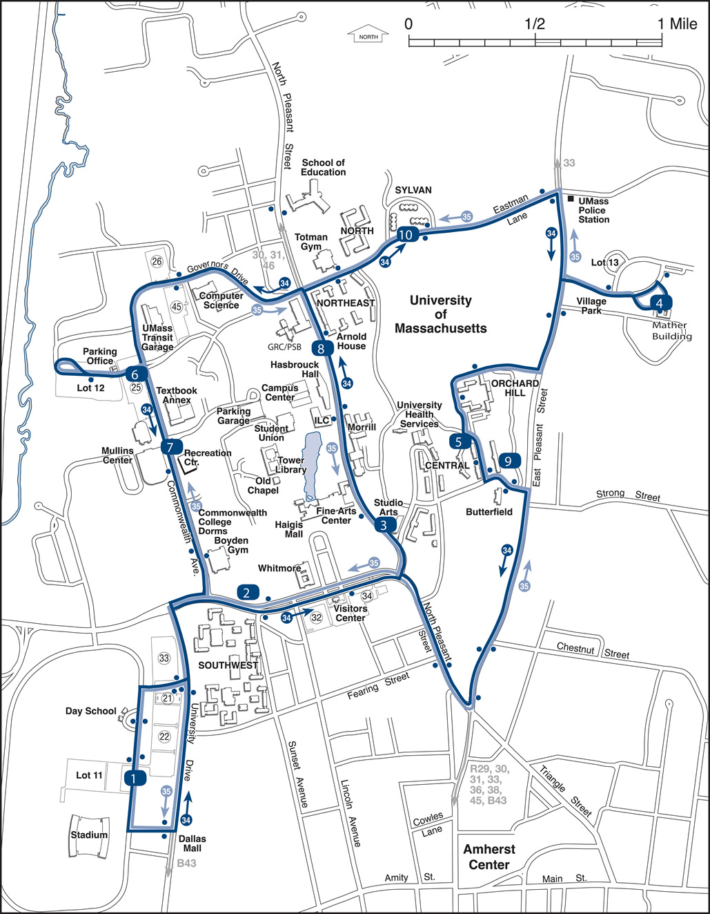

<!DOCTYPE html>
<html lang="en">
<head>
<meta charset="UTF-8"/>
<meta name ="viewpoint" content="width=device-width, initial-scale=1.0"/>
<meta http-equiv="X-UA-Compatibale" content="ie=edge"/>
<link rel="stylesheet" href="./app.css"/>
<title>BPVTAA</title>
<nav class="topnav">

<ul>
    <li><a href="/app.html"></a></li>
    <li><a href="/app.html">Search Destination</a></li>
    <li><a href="/app1.html">Bus Routes</a></li>
    <li><a href="/app2.html">Favorite Routes</a></li>
    <li><a href="/app3.html">Get The App</a></li>
    <li style="float:right"><a href="/app2.html">Log in/ Sign Up</a></li>
</ul>

</nav>

<main>
<div class="display" align="center">

    <div class="Searchbar">
        <script type = "text/javascript">  
        /**
        * Given a route location and the current time, checks for a time after that within a given
        * grace period for a bus to arrive.
        * If a time satisfies condition, eturns an array in the form [hours, minutes].
        * Otherwise, returns an array of size 2 as -1's.
        * @param LocationName A locationg given as a string to search in routes, returns result from "findRoute".
        * @param currentTime An array of two numbers that represent a time as [hours, minutes].
        */
       function findClosestTime(locationName, currentTime)
       {
         const busRoute34 = ["Southwest Mass Ave", "UMass Studio Arts Building", "Olympia Drive/Mather Drive", "Mullins/Rec. Center"];
         const busRoute35 = ["UMass GRC/PSB", "Butterfield Upper Central", "Sylvan"];
       
         const busRoute34Times = [[9.11,9.55,10.39],[9.35,9.57],[10.54,11.38],[10.03,10.25,11.09]];
         const busRoute35Times = [[9.55,10.39],[10.45,11.07],[10.13,10.57,11.19]];
       
         const routes = [busRoute34, busRoute35];
         const routesTimes = [busRoute34Times, busRoute35Times];
       
       /**
        * Takes a location and searches for a match within stored route data.  
        * If found, returns the array position within routes.
        * Otherwise, returns an array of size 2 as -1's.
        * @param location A string representing location
        */
       function findRoute(location)
       {
         for(let x = 0; x < routes.length; ++x)
         {
           for(let y = 0; y < routes[x].length; ++y)
           {
             if(routes[x][y] === location)
             {
               return[x,y];
             }
           }
         }
         return [-1,-1];
       }// end findRoute
       
       /**
        * Takes a time as a number (floating point) and converts to hours and minutes.
        * Returns an array in the form [hours, minutes].
        * @param time A number representing time given as hours.minutes
        */
       function convertToTime(time)
       {
         let convertedTime = [];
         convertedTime[0] = Math.floor(time);
         convertedTime[1] = Math.round(time % 1 * 100);
         return convertedTime;
       }// end convertTime

         const search = findRoute(locationName);
         if(search[0] === -1) return [-1,-1];
         const gracePeriod = 5;
         const times = routesTimes[search[0]][search[1]];
         for(let x = 0; x < times.length; ++x)
         {
           time = convertToTime(times[x]);
           if(time[0] >= currentTime[0])
           {
             if(time[1] >= currentTime[1] + gracePeriod) x = times.length;
           }
         }
         return toString(time[0]) + ": " + toString(time[1]) + "A.M.";
       }// end findClosestTime
        </script>

        <input type="text" class="inputValue" placeholder="Type In Destination">
        <button type="submit" class="button" id="button" onclick = "findClosestTime()"></button>
        
<i class="glyphicon glyphicon-search"></i>
    </div>


    <div class="data">

        <h2 id="busStop"class="busStop">Umass Amherst</h2>
        <h1 class="Time">12:15 PM</h1>
        
        


    </div>

</div>
    

</main>


</head>

<script src="./functions.js"></script>
</html>

